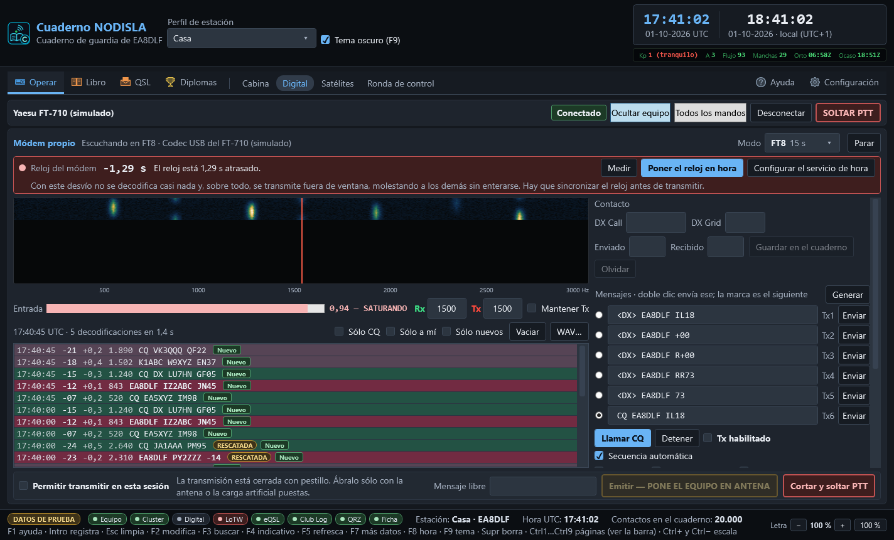
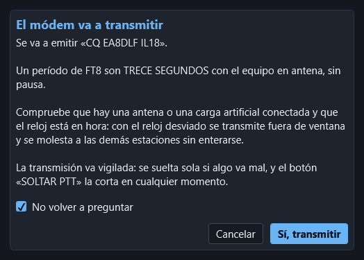

Digital
Operar › Digital (Ctrl 2) es la página de los modos digitales, con el mismo frontal del equipo arriba. Todos los modos los hace esta aplicación, con su propio módem: no hay que abrir WSJT-X, JTDX ni ningún otro programa. El audio entra por el códec USB del equipo, la cascada se calcula aquí y las decodificaciones salen tal cual se ven en pantalla.


Los modos
Se eligen en el desplegable Modo, arriba a la derecha, con su período al lado.
| Modo | Para qué | Ventana | Cómo se apunta en ADIF |
|---|---|---|---|
| FT8 | El de diario en HF y 6 m | 15 s | FT8 |
| FT4 | Más rápido, concursos | 7,5 s | MFSK / FT4 |
| WSPR | Balizas de propagación (no hace contactos) | 2 min | WSPR |
| JT65 | Lento, HF débil y EME | 1 min | JT65 |
| JT9 | Lento y muy estrecho, bandas bajas | 1 min | JT9 |
| Q65 | VHF, EME y dispersión (submodo A) | 1 min | MFSK / Q65 |
| MSK144 | Dispersión meteórica | 15 s | MSK144 |
| FST4 | Lento, para 2200 y 630 m | 1 min | MFSK / FST4 |
| FST4W | Baliza, como WSPR (no hace contactos) | 2 min | MFSK / FST4W |
El modo ADIF va bien puesto para que los contactos cuenten en los diplomas por modo: FT8, JT65, JT9 y MSK144 son modos principales; FT4, Q65, FST4 y FST4W son submodos de MFSK.
Ir a la frecuencia del modo mueve el equipo por CAT a la frecuencia de ese modo en la banda del dial. La tabla de frecuencias de trabajo se puede retocar: Añadir (el modo y el dial actuales), Quitar, Ir a la elegida y Las de WSJT-X, que vuelve a la tabla de fábrica con las frecuencias habituales. En Operación se elige cómo se opera: Normal, Hound (llamar a una expedición en modo fox/hound), Fox y los concursos NA VHF, EU VHF, Field Day, RTTY Roundup y WW Digi, con su Intercambio.
El módem propio
El reloj, antes que nada
FT8 va en ventanas de quince segundos alineadas al reloj universal (FT4, de 7,5 segundos). Un ordenador con el reloj un segundo desviado decodifica mal; con dos segundos, ya no decodifica nada y además transmite fuera de ventana — que deja de ser un problema propio y pasa a ser un problema ajeno: ocupa el período de otra estación y le ensucia las decodificaciones sin que nadie se entere. Por eso el reloj va arriba del todo, con un semáforo de colores, y no escondido en Configuración.
- Medir pregunta la hora a los servidores de hora y recalcula el desvío.
- Poner el reloj en hora mide y escribe la hora del sistema — nunca se hace solo, siempre es un botón que pulsa el operador.
- Configurar el servicio de hora deja el servicio de Windows apuntando a un buen servidor, que arregla el problema para siempre y no solo por hoy.
La cascada
El espectro de audio en el tiempo, con la frecuencia en el eje horizontal. Pinchar en la cascada pone ahí el tono de transmisión. Debajo, el medidor de nivel de entrada avisa y no solo pinta: por encima de 0,90 el codec recorta y las señales débiles se pierden — la barra se pone roja y lo dice con letras — y lo bueno está entre 0,20 y 0,60.
Decodificación normal y decodificación «rescatada»
Cada línea de la lista de decodificaciones lleva la hora, la relación señal-ruido en decibelios, el desfase respecto a la ventana, el tono en hercios y el mensaje. Los indicativos nuevos salen en verde y en negrita; lo que va dirigido a la propia estación, en el color de acento.
Una decodificación puede salir marcada «RESCATADA»: son señales muy débiles que solo se han podido leer gracias al bloque de corrección profunda del módem, con algo más de riesgo de ser falsas que una decodificación normal. La marca existe para que se puedan mirar con más cuidado antes de apuntar un contacto con ellas — no para desconfiar de todas, solo de saber cuáles son.
Transmitir cuesta abrir un pestillo
Emitir un período de FT8 son trece segundos con el equipo en antena. Por eso hay un interruptor, «Permitir transmitir en esta sesión», que empieza cerrado en cada arranque y no se guarda de una sesión a otra: hay que abrirlo cada vez, y solo con la antena o la carga artificial puestas. Con el pestillo cerrado, «Emitir» no hace nada. Con él abierto, «Cortar y soltar PTT» corta la emisión y suelta el PTT sin preguntar.
Si prefiere que el pestillo arranque abierto, marque «Recordar «Permitir transmitir» entre sesiones» en Configuración › Audio y digitales (viene apagado).
Antes de cada emisión sale además una pregunta de confirmación. Tiene una casilla «No volver a preguntar»: márquela y pulse «Sí, transmitir», y ya no se pregunta más. Para que vuelva a preguntar, marque «Preguntar antes de transmitir con el módem» en Configuración › Audio y digitales. Quitar la pregunta no quita la seguridad: el vigilante del PTT (tiempo máximo en antena, suelta si se pierde el latido o se cierra el programa), la negativa a emitir con el reloj fuera de ventana y la negativa a emitir sin salida de audio siguen siempre.


El bloque «Contacto y transmisión» tiene además los datos del corresponsal — indicativo, localizador, informes enviado y recibido — y el botón «Guardar en el cuaderno», que apunta el contacto con la frecuencia del dial más el tono de audio, y el modo tal como lo pide ADIF: FT8 va como modo principal y FT4 como submodo de MFSK.
El contacto se guarda solo al completarse
Con la secuencia automática, el contacto se apunta solo en el cuaderno en cuanto está hecho, sin pulsar «Guardar en el cuaderno»:
- cuando el corresponsal manda RR73, RRR o 73 después de intercambiar informes, o
- cuando sale su RR73 después de haber recibido su R+informe.
Se guarda con indicativo, localizador, informes enviado y recibido, frecuencia (dial más tono de transmisión), modo ADIF, hora de inicio (la primera emisión o recepción del contacto) y hora de fin. En la pantalla aparece un aviso corto, por ejemplo «Guardado: EA1ABC 20m FT8», y se refrescan el cuaderno, el mapa, los diplomas y las subidas automáticas, igual que al guardar a mano. Si el corresponsal repite el 73 no se apunta dos veces, y un contacto que se queda a medias no se apunta. Si no se sabe la frecuencia del dial no hay banda que apuntar: sale el aviso y se guarda con el botón. Se apaga en Configuración › Audio y digitales, con «Guardar solo en el cuaderno el contacto completo».
La secuencia automática y los mensajes
A la derecha, los seis mensajes Tx1 … Tx6 se componen solos con su indicativo, su localizador y el del corresponsal (Generar los rehace). Doble clic en un mensaje lo envía; la marca redonda dice cuál es el siguiente. Llamar CQ empieza a llamar y Detener para. Con Secuencia automática, al contestar alguien se pasa solo al mensaje que toca:
- Saltar Tx1 — al contestar a un CQ se empieza por el informe (Tx2).
- Llamar al primero — llamando CQ, se contesta solo al primero que llame.
- Tx4 con RRR — en vez de RR73.
- Parar tras n ciclos sin respuesta — deja de insistir.
En la lista de decodificaciones, doble clic en una línea prepara la respuesta a esa estación: pone su indicativo y su localizador en el contacto y compone los mensajes. Mantener Tx deja quieto el tono de transmisión (solo se mueve con Mayús + clic o escribiéndolo en Tx). Los filtros Sólo CQ, Sólo a mí y Sólo nuevos aclaran la lista cuando la banda está llena, y Vaciar la limpia. WAV… decodifica una grabación.
Más opciones
- Paleta, Ganancia, Cero, Promedio y Ancho ajustan cómo se pinta la cascada.
- Mandar lo que se oye a PSK Reporter (apagado de fábrica): envía cada 5 minutos lo decodificado, con su indicativo y su localizador.
- Guardar un WAV de cada ventana y Apuntar todas las decodificaciones en decodificaciones.txt, para revisar después; van a la carpeta de datos del programa.